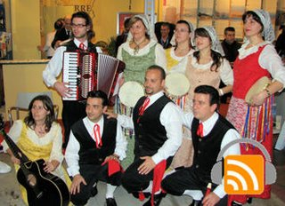

This podcast is a recording of the folk group Ciuri d'Acantu performing traditional Sicilian songs and dances on the floor of the International Travel Expo. Originally from Campobello di Mazara, the Ciuri d'Acantu performers picture in their representations the rural lifestyle of farmers and fishermen, as well as love stories of young people.